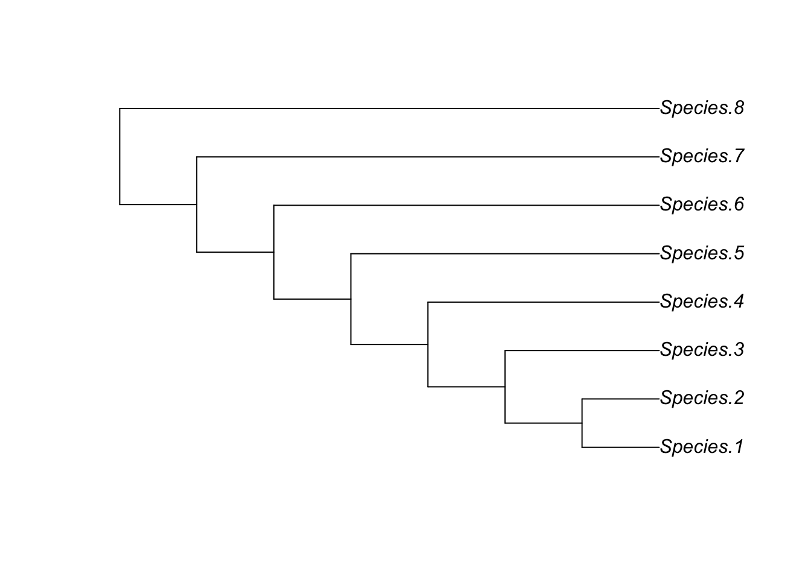

library(ape)
help(ape)MT24W5: Phylogenetic Trees
1. An introduction
- Phylogenetic trees are central in biology for representing hierarchical relationships in the diversity of life
- It is a useful and general skill to be able to manipulate, analyse and plot these trees
- This practical also shows how to work with R packages that process a different kind of biological data
- We will spend a bit of time peeking behind the curtain of the package
- This will help us to understand the structure and logic of tree objects, and how R works with them
- There are many R packages for working with trees
- Different research groups write their own functions and some of these get incorporated into existing packages
- Others are used to make new packages
APE: Analysis of Phylogenetics and Evolution
This is one of the earliest and widely known packages, and is what we will use in this project
How do I know which package to use for a given task, out of the wide range available?
- The computer assignments help to build a portfolio of tasks to run, gaining confidence in finding/working with new packages
- It is useful to use generative AI engines
2. The APE package and phylo objects
The following code creates a completely unresolved tree with 10 tips:
star.tree <- stree(n=10, type="star")
help(stree)
plot(star.tree)- This gives a star phylogeny
- The function has given arbitrary labels: t1, t2, etc.
We can make array of named, numbered tip labels:
my.tip.labels <- paste("Species", 1:8, sep=".")
my.tip.labels[1] "Species.1" "Species.2" "Species.3" "Species.4" "Species.5" "Species.6"
[7] "Species.7" "Species.8"- 1:8 creates the array c(1,2,3,4,5,6,7,8) then paste adds ‘Species’ to each number
- They are separated using sep=“.”
The following code makes the imbalanced tree object:
imbalanced.tree <- stree(n=8, type="right", tip.label=my.tip.labels)
plot(imbalanced.tree)
The following code makes the tree balanced:
balanced.tree <- stree(n=8, type="balanced", tip.label=my.tip.labels)
plot(balanced.tree)The following code asks how R actually encodes the information seen graphically in the plotted tree:
balanced.tree
Phylogenetic tree with 8 tips and 7 internal nodes.
Tip labels:
Species.1, Species.2, Species.3, Species.4, Species.5, Species.6, ...
Rooted; no branch lengths.It gives a summary of the properties of the tree
It does not show what the object is made up of
The phylo object is how the tree is represented in APE
- It is a list made up of several parts
- These parts can be revealed using str()
str(balanced.tree)List of 3 $ edge : int [1:14, 1:2] 9 10 11 11 10 12 12 9 13 14 ... $ tip.label: chr [1:8] "Species.1" "Species.2" "Species.3" "Species.4" ... $ Nnode : int 7 - attr(*, "class")= chr "phylo" - attr(*, "order")= chr "cladewise"$edge is a table that specifies topology
- It is essentially a branch of a tree that connects 2 nodes
The following code accesses just the edge table:
balanced.tree$edge [,1] [,2]
[1,] 9 10
[2,] 10 11
[3,] 11 1
[4,] 11 2
[5,] 10 12
[6,] 12 3
[7,] 12 4
[8,] 9 13
[9,] 13 14
[10,] 14 5
[11,] 14 6
[12,] 13 15
[13,] 15 7
[14,] 15 8
Understanding the edge table
- This table shows numbers that specify the branches
- The numbers are assigned to each tip and internal of the tree
- Tips: labelled 1-8
- Internal nodes: 9-15
- There is always N-2 internal nodes in a fully bifurcating tree
- There are 2N-2 branches
- N = number of tips
- Column 1: gives the ancestor
- Column 2: gives the descendant
- Row: a branch on the tree
- E.g. tips 1 and 2 share a common ancestor
- When looking at them as descendants, the ancestor of both is 11
We could label the internal nodes graphically, though not typically done:
plot(balanced.tree)
nodelabels()The notation for pulling entries out of a matrix/table is to use square brackets, e.g. table[row,column]:
i <- 1
balanced.tree$edge[i,][1] 9 10
Understanding i <- 1 | balanced.tree$edge[i,]
- We have set branch i = 1
- i is now an index representing the first row of the edge table
- In this function, we are accessing the first row
- Result of code: the ancestral node and descendant node for the first edge of the tree
The following code extracts the node the is the ancestor of branch i:
balanced.tree$edge[i,1][1] 9The following code extracts the node that is the descendant of branch i:
balanced.tree$edge[i,2][1] 10We can also work the other way around:
The following code finds which branch node/tip i:
which(balanced.tree$edge[,2]==i)[1] 3- As i=1, it is now referring to node 1
- Branch 3 is what leads to the first species
The following code finds the ancestral node of node 1 (species 1):
balanced.tree$edge[which(balanced.tree$edge[,2]==1),1][1] 11- 11 is the ancestral node that leads to species 1
The following code asks for the ancestral node of a specifically named tip:
balanced.tree$edge[which(balanced.tree$edge[,2]==which(balanced.tree$tip.label=="Species.5")),1][1] 14
Graphical note:
- The display order of two branches descending from the same node does not convey any information as long as the topology and branch lengths remain the same
- Rearranging this order can sometimes highlight patterns or make the tree look tidier
- In APE, this is accomplished by rotating the internal nodes
- For instance, if we wanted to display the tips on the tree above in numerical order by species, we could do so by rotating each one of the internal nodes in turn
for (each.node in c(9:15)) {
balanced.tree <- rotate(balanced.tree, node=each.node)
}
plot(balanced.tree)
nodelabels()- For each node 9-5, they are rotated
- E.g. if it was c(15), only 7 and 8 would flip
- Reason: they branch from node 15
Warning
- This example only worked neatly because we rotated each node in an order that just happened not to cause any tangling or conflicts
- Applying rotate to multiple nodes at once is a tricky operation in APE
- It is non-reversible, because each rotation changes the structure and order of the tree object that all subsequent rotations are applied to.
- While it is possible to rotate any or all internal nodes, doing so may require a stepwise approach, re-examining and re-labeling the tree each time
- Non-intuitive behaviour during what ought to be a simple and topologically neutral operation illustrates one of the limitations of representing trees as an edge matrix, versus graphical software that displays trees more intuitively
3. Random trees
- APE has several functions for making random trees
- We will use rcoal()
- This generates what is known as a coalescent tree
- It picks tips at random to group together hierarchically until it reaches the common ancestor of all the tips
- It is particularly used to model genealogies of individuals within a species or population, yielding an ultrametric tree
- Ultrametric: all the tips are lined up and the branch lengths reflect relative time back to each hypothetical ancestor
random.coalescent <- rcoal(n=8, tip.label=my.tip.labels)
plot(random.coalescent)
nodelabels()
This builds a different tree each time it is run
- The code selects a random number to decide which tips group together
- What changes?
- Topology; branching pattern, who groups with whom
- Branch lengths
random.coalescent$edge [,1] [,2]
[1,] 9 10
[2,] 10 13
[3,] 13 1
[4,] 13 2
[5,] 10 11
[6,] 11 3
[7,] 11 4
[8,] 9 12
[9,] 12 5
[10,] 12 14
[11,] 14 6
[12,] 14 15
[13,] 15 7
[14,] 15 8random.coalescent$tip.label[1] "Species.8" "Species.4" "Species.2" "Species.3" "Species.5" "Species.1"
[7] "Species.7" "Species.6"
Can you work out the topology from the table and match it to the tree?
This is interpreted in the same way as before, but now we have seen the order of the species, which is random now, not numerical
random.coalescent$edge.length [1] 0.04651531 1.06502522 0.17349559 0.17349559 0.25936879 0.97915202
[7] 0.97915202 0.46631454 0.81872158 0.71000133 0.10872026 0.05921678
[13] 0.04950348 0.04950348- This stores an array of the branch lengths in the same order as the rows in the topology tables
str(random.coalescent)List of 4
$ edge : int [1:14, 1:2] 9 10 13 13 10 11 11 9 12 12 ...
$ edge.length: num [1:14] 0.0465 1.065 0.1735 0.1735 0.2594 ...
$ tip.label : chr [1:8] "Species.8" "Species.4" "Species.2" "Species.3" ...
$ Nnode : int 7
- attr(*, "class")= chr "phylo"
- attr(*, "order")= chr "cladewise"4. Preparing and manipulating trees
4.1 Branch length vs. dated trees
- By default, when you reconstruct a phylogenetic tree from DNA sequence data it will not be ultrametric
- Instead, branch lengths are proportional to the number of DNA substitutions
- The tips do not all line up at the present day
- Reason: more DNA substitutions are inferred along some branches than others
- However, many types of phylogenetic analysis require an ultrametric tree, where branch lengths reflect relative times rather than amounts of change
- At a minimum, an ultrametric tree gives relative dates and ages
- With a calibration point such as a fossil date, it can even be expressed in millions of years of geological time
- There are various methods for converting a non-ultrametric tree into an ultrametric one, based on assumptions about how evolutionary rates change on the tree
- First, we can generate a random tree that is not ultrametric using the alternative function rtree()
random.tree <- rtree(n=8, tip.label=my.tip.labels)
plot(random.tree)is.ultrametric(random.tree)[1] FALSEis.ultrametric(random.coalescent)[1] TRUE
The chronos function
- We can fit unequal branches into an ultrametric tree using the chronos function
- This uses penalised likelihood to minimise evolutionary rate variation across the tree
- The details of this are not important
ult.tree <- chronos(random.tree)
Setting initial dates...
Fitting in progress... get a first set of estimates
(Penalised) log-lik = -10.71523
Optimising rates... dates... -10.71523
Optimising rates... dates... -10.71521
log-Lik = -10.6558
PHIIC = 61.34 is.ultrametric(ult.tree)[1] TRUEplot(ult.tree)- These are more sophisticated methods for dating trees based on DNA seqquence data
- You can incluse fossil or other calibrations to set the scale to millions of years
- This function provides a simple way to re-estimate branch lengths on a tree with non-ultrametric branches
- With an ultrametric tree, you can extract the (relative) ages of each node using an APE function:
branching.times(ult.tree) 9 10 11 12 13 14 15
1.0000000 0.5427151 0.2909993 0.2653661 0.5984753 0.2775419 0.2045734 4.2 Polytomies vs. bifurcating trees
- We tend to think of the true pattern of evolutionary branching as dichotomous, i.e. fully bifurcating trees
- In reality, there may be insufficient time and change on a particular branch to resolve it and we can end up with a polytomy
- Hard polotomy: a node with 3 or more branches descending directly from it
- Soft polytomy: may be coded as a bifurcating topology, but some branchs lengths are zero / so close to zero that it looks like a polotomy when plotted
- A lot of important tree functions assume a fully resolved tree
is.binary(star.tree)[1] FALSEis.binary(balanced.tree)[1] TRUE- The star tree has a single multichotomy at the root, so is not bindary (bifurcating)
- There is a function for resolving such trees with the branching order decided randomly:
new.star.tree <- multi2di(star.tree)
is.binary(new.star.tree)[1] TRUE4.3 Cosmetics for plotting trees
- A rooted tree can be thought of like a hanging mobile
- We can swing around any of the nodes and the tree stays the same
- For plotting, some ways of arranging the mobile might look better than others, and we examined the rotate function and its limitations earlier
- There are some useful non-R applications for tinkering with trees to make them look nice, such as FigTree, but APE also has some functions to tidy up trees
help(par)par(mfrow=c(1,2))
ladderized.tree<-ladderize(random.coalescent,right=TRUE)
plot(ladderized.tree)
ladderized.tree<-ladderize(random.coalescent,right=FALSE)
plot(ladderized.tree)
axisPhylo()
Explaining the first line of the above code
- par(): this function is used to modify the graphical parameters of plots in R
- mfrow: this parameter specifies the layout on the plotting window in terms of rows and columns
- It tells R how to arrange multiple plots within the same plotting space
- c(1,2): rows, columns
- For non-ultrametric trees, add a scale bar using add.scale.bar()
- The plot.phylo() function also plots other styles of trees:
par(mfrow=c(1,3), cex=1, mar=c(0.2,0.2,0.2,0.2))
plot(random.coalescent,type="unrooted")
plot(random.coalescent,type="fan")
plot(random.coalescent,type="cladogram")
Explaining the first line of the above code
- mfrow=c(1,3): specifies the layout in a 1x3 grid
- cex=1: this is the character expansion
- This sets the text to the default size (1)
- mar=c(0.2,0.2,0.2,0.2): this species the margins around each plot
- Form: c(bottom, left, top, right)
- This has set vert narrow margins around the plots
- It is useful for minimising white space around the plots, allowing them to occupy more of the plotting area
When would we use each tree?
- Unrooted can be useful for population samples
- Circular can help to show major clade relationships on very large trees
- Phylograms/cladograms are the most informative if there are no branch lengths included
You can change tip size/labels:
plot(random.coalescent, type="fan", show.tip.label=FALSE)plot(random.coalescent, type="fan", cex=0.5)Using help(plot.phylo) shows a full list of options.
5. Reading in real trees and matching data
How can we read real trees into R?
- Trees that are produced by standard phylogenetics software tend to be saved as files in Newick format
- Newick uses curved brackets to record the topology of a tree
- For example, an imbalanced tree with four taxa, A, B, C and D is given by:
- (((A,B),C),D)
- If there are branch lengths, these are specified using:
- Colons after each taxon name (for terminal branches)
- Colons after each closed bracket (for internal branches)
- E.g. (((A:1.5,B:1.5):1,C:2.5):2,D:4.5)
- It is possible to read these trees directly into R:
tr <- read.tree(text = "(((A:1.5,B:1.5):1,C:2.5):2,D:4.5);")
plot(tr)In reality, you will be working with files containing the tree
The coffee wilt pathogen
- One example tree is included in the downloads (Ffuji.tre), which is a tree of six isolates of the coffee wilt pathogen, Fusarium xylarioides, and some related species in the Fusarium fujikori species complex of pathogenic fungi
- F. udum is a wilt pathogen of pigeon pea
- The others are not wilt-causing pathogens
fusarium.tr <- read.tree(file = "Ffuji.tre")
plot(fusarium.tr)
axisPhylo()- This tree was reconstructed from thousands of loci and calibrated in millions of years using a typical rate of nuclear gene evolution for fungi
- The root node is dated to ~17mya
There are 2 things to note:
- Some tree files contain multiple trees, in which case the object produced by read.tree() will be a list of multiple trees
- Each can be accessed via tr[[1]], tr[[2]] and so on
- Double square brackets are used to access items in a list, in the same way we use single square brackets to index entries in a matrix
- Some trees are saved in a similar but alternative format called Nexus, which can be uploaded using the read.nexus() function in otherwise the same way
- All tree files can be opened in a text editor to look at what is in them
- A newick file will just have trees in the curved bracket notation described above, whereas a Nexus file has Begin Nexus; at the start and can contain lots of additional information
5.1 Matching a tree with data
- The download also includes a .csv file with some phenotypic data
- Data: whether each taxon causes wilt or not
- Of course, in real studies you might have a much larger dataset than this, with multiple columns, and it is useful to be able to match up different datasets
fusarium.data <- read.csv("Ffuji.data.csv", header=TRUE)
head(fusarium.data) Taxon Wilt
1 F_fujikori 0
2 F_mangiferae 0
3 F_proliferatum 0
4 F_udum 1
5 F_verticillium 0
6 Fxyl254 1- The names are not written in the same way as in the tree
- This is fixable!
How can we convert the table names into tree names?
- First, there are additional underscore characters
- We can make a new vector of names that gets rid of those using gsub(), which is like R’s version of find and replace
- Next, we need to truncate the first five names to be just 4 characters long, and enter the updated names into the table
- This uses the substring() function
- We also need to match up the data
- The taxa are not in the same order as in the tree
new.names <- gsub("_", "", fusarium.data$Taxon)
new.names[1:5] <- substring(new.names[1:5],1,4)
fusarium.data$Taxon <- new.names
pmatch(fusarium.tr$tip.label, fusarium.data$Taxon) [1] 2 3 1 5 4 8 11 10 9 7 6pmatch: the output tells us what position each element in the first vector occupies in the second vector - They are currently aligned as code is already fixed during the exercise
fusarium.data <- fusarium.data[pmatch(fusarium.tr$tip.label,fusarium.data$Taxon),]
Warning
This is overwriting, which is bad practice
6. Analysing the properties of trees
6.1 Total branch length
- Total branch length might be of interest for describing phylogenetic diversity
- For example, some studies calculate how much evolutionary history is represented by extant species in a clade, and how that would change if some of the species went extinct
- How many millions of years of unique evolutionary history would we lose?
- To answer this question needs a tree with branch lengths calibrated in millions of years
sum(fusarium.tr$edge.length)[1] 76.40981The following code removes species and recalculates:
fusarium.tr.trim <- drop.tip(fusarium.tr, c("Fver", "Fpro"))
plot(fusarium.tr.trim)
axisPhylo()sum(fusarium.tr.trim$edge.length)[1] 56.81702- The following code removes a random selection of tips:
- E.g. choosing 3 numbers at random from 1-11
fusarium.tr$tip.label[sample(1:11,3)][1] "Fpro" "Fxyl254" "Fudu" - To mark them for extinction, we could substitute that into the drop.tip() function above
- That would allow you to look at at how much phylogenetic diversity you are left with when you lose 3 species
- To estimate the average loss, you could write a for() loop to repeat this operation
- Then, work out what range of outcomes there are across random trials if you repeated it 100 or 1000 times
How do we find the unique evolutionary history of a given tip?
- The unique evolutionary history of a given tip is simply the terminal branch leading to it
- We find the terminal branch for tip i (we set this to 1 earlier)
- Then, we find the length of that branch, using the same kind of notation we met in sections 2 and 3:
terminal.branch <- which(fusarium.tr$edge[,2]==i)
fusarium.tr$edge.length[terminal.branch][1] 8.028423This tip evolved ~8mya
6.2 How imbalanced is the tree?
- Early studies looking at properties of phylogenetic trees were interested in balance and imbalance among clades
- This is an intriguing property because imbalance doesn’t just mean that some sub-clades are more diverse than others, but there is some kind of progressive branching
- The next branching event is likely to be on a descendant branch of the previous branching event, rather than on any other branch in the tree
- The studies compared the amount of balance in observed trees to the expected distribution of balance across a set of randomly generated trees
- This was to show that real trees tend to be more imbalanced than expected by random branching
The balance function
- The function balance() counts the number of descendants of the 2 clades descended from each internal node
my.balance.table <- balance(random.coalescent)We could calculate an average measure of balance for the whole tree - The following code uses a for loop to sort each row so that the most diverse sister clade is shown in column 1:
for (i in (1:nrow(my.balance.table))) {
if (my.balance.table[i,1]<my.balance.table[i,2]) {
my.balance.table[i,1:2]<- my.balance.table[i,2:1]}
}The following code is an alternative way to do the code above:
my.balance.table <- t(apply(my.balance.table, 1, function(row) sort(row, decreasing = TRUE)))The following code calculates the proportion of diversity in the more diverse sister clade at each node:
my.balance.table[,1]/(my.balance.table[,2]+my.balance.table[,1]) 9 10 11 12 13 14 15
0.5000000 0.5000000 0.5000000 0.7500000 0.5000000 0.6666667 0.5000000 The following code expresses this as a mean across all the nodes:
mean(my.balance.table[,1]/(my.balance.table[,2]+my.balance.table[,1]))[1] 0.5595238- This imbalance metric varies from 0.5 to approaching 1.0
- Higher value = more imbalance
- We can write a function to do all these steps on any tree
- We can easily repeat it at multiple times for multiple trees:
imbalance.metric <- function (tr) {
##Calculate number tips in sister clades at each node
x<-balance(tr)
##Sort the table so most diverse sister clade is in the first column
##using the for loop approach
for (i in (1:nrow(x))) {
if (x[i,1]<x[i,2]) {
x[i,1:2]<- x[i,2:1]}
}
##Return the mean of the proportions of diversity in the most diverse sister clade
return(mean(x[,1]/(x[,1]+x[,2])))}- This code repeats what we just did
- Instead, it uses tr to denote a tree object that is required by our function
- Then, it uses x inside the function to denote the balance table
- When we run the function on any tree object, it will give our final imbalance metric:
imbalance.metric(random.coalescent)[1] 0.5595238imbalance.metric(imbalanced.tree)[1] 0.7545918imbalance.metric(fusarium.tr)[1] 0.6709416
Tip
- If you are writing a function, it is always worth writing your code outside of the function first and inspecting the outputs to check it is working, before you add it inside a function for ease of repeated use on multiple objects
- It is much easier to troubleshoot outside of a function than inside
6.3 Mapping a binary character
- We often use phylogenetic trees to explore trait evolution, and the first step is mapping changes in a character trait onto the tree
- There are various methods to do this, depending whether the character is continuous or discrete
- Let’s try mapping the wilt-causing trait onto the Fusarium tree
Mapping the wilt-causing trait
- We can reconstruct the character along the tree using maximum likelihood
- This approach estimates the evolutionary rate of the character and simultaneously estimates the likelihood that the ancestral state at each node was either 0 or 1
- The default version assumes that the rate of changing from 0 to 1 is the same as changing from 1 to 0, per unit time along a branch
- It fits the ancestral state at each node and the value of evolutionary rate that yields the maximum likelihood for the model
- The function is called ace(), for ancestral character estimation, and we tell it that our character is to be treated as discrete
The following code clears values stored at the nodes to allow the function to write new entries:
fusarium.tr$node.label <- NULL
recon <- ace(fusarium.data$Wilt, fusarium.tr, type = "discrete")If you look at the recon object that is the result of applying the function, you can see it provides the likelihood, a little table showing:
- The indices for each rate (in our case there is only one rate, so this is a bit redundant, but it would be informative for some more complex models)
- The estimate of the evolutionary rate and its standard error
- The scaled likelihoods that the ancestral state at the root of the tree was 0 or 1
You can see the likelihood of ancestral states for all nodes by extracting the correct part of the ace() output:
recon
Ancestral Character Estimation
Call: ace(x = fusarium.data$Wilt, phy = fusarium.tr, type = "discrete")
Log-likelihood: -2.995596
Rate index matrix:
0 1
0 . 1
1 1 .
Parameter estimates:
rate index estimate std-err
1 0.0244 0.0178
Scaled likelihoods at the root (type '...$lik.anc' to get them for all nodes):
0 1
0.700219 0.299781 recon$lik.anc 0 1
12 7.002190e-01 0.299781029
13 9.762689e-01 0.023731142
14 9.945325e-01 0.005467496
15 6.299461e-01 0.370053852
16 1.418051e-01 0.858194875
17 3.630135e-04 0.999636986
18 6.235068e-07 0.999999376
19 1.076007e-05 0.999989240
20 4.909265e-06 0.999995091
21 4.188584e-06 0.999995811- Each row now signifies a node and the scaled likelihood of each state
- So 0.5 and 0.5 would mean an equal chance of being in either state, the model really can’t distinguish
- A value close to 1 would mean the model has a high likelihood for that node to be a particular ancestral state
We primarily want to see how the character changes on the whole tree
We can plot this out as follows:
- Plot the tree
- Set up a vector with the colours we want to use to represent each state (blue = no wilt, yellow = wilt)
- Use these to plot out circles at the tips and little bars shaded according to the likelihood of each state for the internal nodes
plot(fusarium.tr, type = "phylogram", label.offset=0.5)
cols <- c("blue", "yellow")
tiplabels(pch = 21, bg = cols[fusarium.data$Wilt+1], cex = 1.5)
nodelabels(thermo = recon$lik.anc, piecol = cols, cex = 0.8)
axisPhylo()7. Downloading a tree of Open Tree of Life
- For the assignment, we’re going to ask you to obtain an existing published tree of your choice and perform some analyses on it, related to the ones we tried above
- A very convenient place to look for a tree is the Open Tree of Life server: https://tree.opentreeoflife.org
- Go to the Add/Browse Trees menu, and a list of studies appears, you can add terms to filter and narrow down
- Click on a study that looks interesting and then again under “Tree name” to see the tree
- It shows a phylogram and if you click on properties it tells you whether the tree includes branch lengths, which is necessary for the assignment
- To download a tree, close the tree viewing window then click on download a newick tree in the bottom right of the study window
- This pops up in the format described above and you can download or copy and paste into a text editor and save as something like “Snakes.tre”
- Then you can load this into R using the commands above and proceed with the assignment